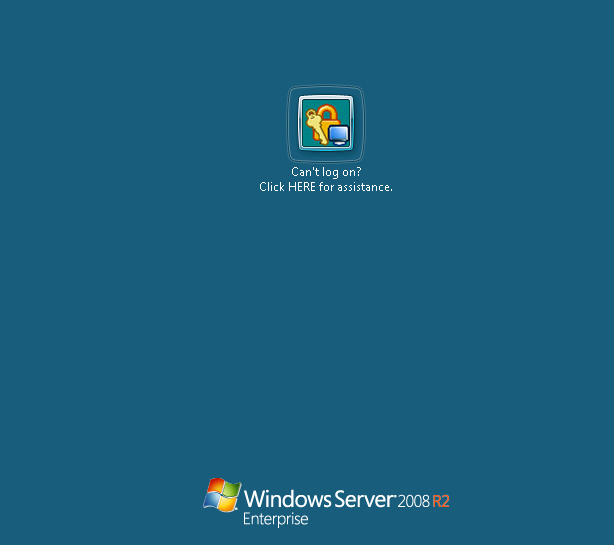

After installation of Netwrix Password manager client (Logon prompt extension) it is not
possible to log on to the system. There are no options on the logon screen except Netwrix
assistant

To allow users reset passwords from the logon screen, Password Manager client adds its own credential providers. There are two options for this - a link under the logon field, or an additional icon available after 'Other credentials' is pressed. During the deployment of the link to the logon screen, default password providers get disabled and replaced with the Netwrix provider. More details on this can be found in the KB2090 Such issue can occur when some third-party software blocks the Netwrix credential provider from successful deployment.
To restore the logon screen, you will need to access the computer registry, for example, by means of the Remote Registry service
To allow users reset passwords from the logon screen, Password Manager client adds its own credential providers. There are two options for this - a link under the logon field, or an additional icon available after 'Other credentials' is pressed. During the deployment of the link to the logon screen, default password providers get disabled and replaced with the Netwrix provider. More details on this can be found in the KB2090 Such issue can occur when some third-party software blocks the Netwrix credential provider from successful deployment.
To restore the logon screen, you will need to access the computer registry, for example, by means of the Remote Registry service
- Run regedit on another machine with credentials of an account that has local admin permissions on the problematic machine.
- Select File - Connect network registry
- Specify the problematic computer name
- When remote registry is connected, expand %servername%HKEY_LOCAL_MACHINESOFTWAREMicrosoftWindowsCurrentVersionAuthenticationCredential Providers{6f45dc1e-5384-457a-bc13-2cd81b0d28ed}
- Change the Disabled DWORD value to 0, or simply delete the value